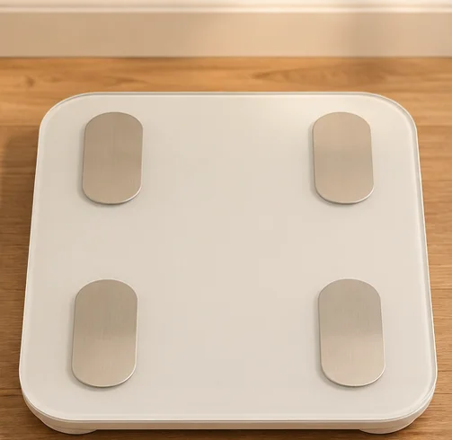
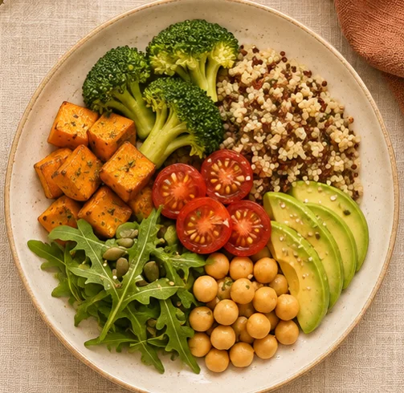

Consulta nutricional
Revisamos tus hábitos, tus horarios y tus objetivos. A partir de la consulta preparo un plan alimentario adaptado a tu día a día.
Nutrición clínica
Consultas nutricionales y evaluación de la composición corporal, con un plan adaptado a tu salud y tu rutina.
Solicitar turno por WhatsAppTigre · San Fernando · Pacheco

Servicios
Revisamos tus hábitos, tus horarios y tus objetivos. A partir de la consulta preparo un plan alimentario adaptado a tu día a día.

Evaluación de la composición corporal con un informe que recibís por WhatsApp en el momento.
Ver el informe de ejemplo →
En los controles revisamos cómo te fue con el plan, qué pudiste incorporar y qué ajustes necesitás para seguir.
Sobre Belén
Lic. en Nutrición · MN 5422 · MP 2467
Trabajo en nutrición clínica y atiendo en centros médicos de Zona Norte. En consulta busco que las recomendaciones se adapten a tus necesidades, tus horarios y tu manera de comer.
Bioimpedancia
El informe reúne estimaciones de masa muscular, grasa corporal y agua corporal. Lo recibís por WhatsApp en el momento de la evaluación.
Ver ejemplo de informeEjemplo ilustrativo
Turnos
Escribime para consultar la sede y los horarios disponibles.
Tigre · San Fernando · Pacheco
Solicitar turno por WhatsApp